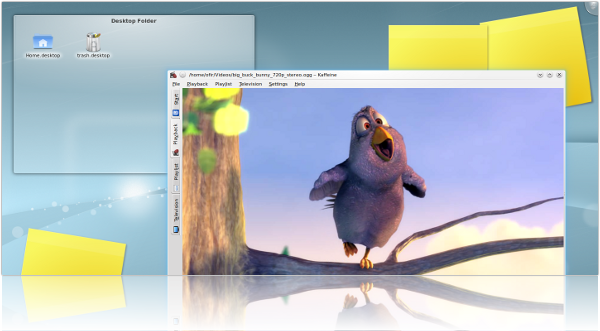
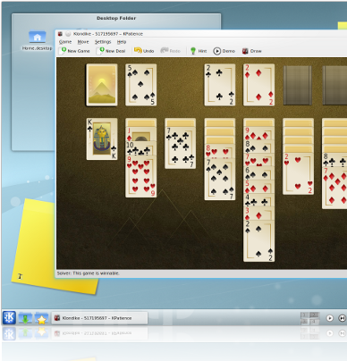

¿Qué es Kubuntu?
Kubuntu es un sistema operativo construido por un equipo internacional de desarrolladores expertos. Contiene todas las aplicaciones que usted necesita: un navegador web, una suite de oficina, aplicaciones multimedia, un cliente de mensajería instantánea y mucho más.
Kubuntu es una alternativa de código abierto para Windows y Office.
Tegnologías Utilizadas
Kubuntu está basado en software libre de muchas comunidades de desarrolladores que incluyen:
 Software de KDE , las aplicaciones que le dan el poder
Software de KDE , las aplicaciones que le dan el poder
Plasma , escritorio de KDE y espacios de trabajo netbook
Linux , un núcleo del sistema operativo tomando el mundo
Debian , el suministro de la mayoría de nuestros paquetes
Ubuntu , convirtiendo el software libre en distribuciones como Kubuntu
Navegar por las imágenes con una interfaz bonita
Imágenes son una parte importante de la vida de hoy, con cientos de fotos de familiares y amigos. Es por eso que pensamos que debe ser capaz de ver fácilmente mediante una interfaz bonita. Kubuntu viene con aplicaciones de diseño gráfico para el usuario doméstico. Puede navegar, ver, compartir e incluso mejorar tus fotos.
Compartir todo en todas partes, con un solo clic
Kubuntu le permite compartir sus fotos con sus seres queridos de una manera sencilla e intuitiva. Sólo tienes que seleccionar las imágenes que desee y haga clic en la exportación: Kubuntu se hará cargo del resto.
Documentos abiertos sin problemas
Abrir PDF, Dejavu, PS, DVI y más fuera de la caja. Documentos de anotar y rellenar formularios con Okular, el visor de documentos universal. Okular lee libros electrónicos también
Navegar por Internet con seguridad
Kubuntu viene pre-instalado con Konqueror, el navegador web de KDE, manteniendo a salvo en sus aventuras en línea. Konqueror es un navegador rápido, ligero, con todas las características que hemos llegado a esperar.
Navega por Internet con Firefox
Los usuarios más familiarizados con el galardonado navegador web Firefox se puede instalar con un solo clic nuestros proceso de instalación. Con Firefox puedes navegar más rápido y seguro.
Navegadores más de código abierto están disponibles a través de repositorios de software de Kubuntu.
Correo electrónico fácil
Kubuntu utiliza Kontact para que pueda acceder a su correo electrónico. Si se trata de un correo electrónico de negocios o una carta a un amigo, Kontact tiene todo cubierto. Kontact se integra perfectamente con su agenda y nuestra suite de productividad.
Chat en vivo directamente desde el escritorio con tus amigos
Kopete, mensajería instantánea de Kubuntu cliente, te permite chatear con tus amigos en Facebook Chat, Google Talk, AIM, ICQ, Jabber, Messenger, Skype y muchos más desde una única interfaz. Kopete viene con plugins que permiten chatear con seguridad, traducir los mensajes entrantes a su idioma nativo y mucho más.
Multimedia fácil, con Kubuntu
Kubuntu viene integrado con una música y un reproductor de películas. Los jugadores son fáciles de usar. Sólo tiene que seleccionar una canción o una película y Kubuntu se hará cargo del resto. Kubuntu tiene más formatos de música y vídeo de la caja; formatos restringidos tales como MP3 se instalan con dos clicks cuando sea necesario.

Música con experiencia en un nivel diferente
Amarok, un reproductor de música por defecto de Kubuntu, tiene una interfaz intuitiva y amigable. Que hace que la reproducción de la música que te gusta y descubrir nueva música sea más fácil que nunca, y se ve bien lo hace!
Uso Amarok para comprar y descargar música y podcasts, ver videos musicales, cantar junto a las letras y gestionar los dispositivos de los medios de comunicación.
Mejore su experiencia mediante la adición de scripts para Amarok con el simple clic en la interfaz. Agregar estaciones de radio de su área, establecer un reloj despertador y grabar CD de música directamente desde Amarok.
Oficina completa y profesional conjunto
Crear documentos profesionales, hojas de cálculo y presentaciones con OpenOffice.org. OpenOffice.org es compatible con todas las aplicaciones de oficina como Microsoft Office. La gran diferencia es que OpenOffice.org es libre (y promete no presentar al Sr. Clippy).
Suite de productividad
Kontact es la suite de productividad que lo hace todo: correo electrónico, calendario, libreta de direcciones, listas de tareas, RSS de agregación y de seguimiento de tiempo personal. Nunca olvide reuniones importantes con el servicio de recordatorio de Kontact. Lleve un registro de todos sus proyectos e imprimir listas de tareas con el administrador de tareas.
Jugar con sus amigos y familiares o por su cuenta
Kubuntu viene con una gran variedad de juegos. Usted puede encontrar juegos de cartas, tablero y la lógica, así como juegos de arcade y estrategia. Juegos divertidos y educativos para los niños también están incluidos.
Juego Klondike (Solitario), Spider, Breakout, Sudoku y otros conocidos juegos.
